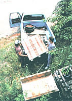
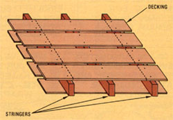
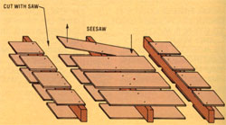

Do you want to build some affordable luxuries for your home and yard? You can do it by . . .
If your household budget has taken the kind of battering that ours has over the past couple of years, you probably aren't often able to come up with any extra money to spend on such "frivolous" projects as building a picnic table for the back yard or a bookcase for the family room. After all, what with the price of' wood these days, it's hard enough to find the wherewithal to purchase lumber for the jobs that are essential to running a home or farm.
So what options does a frugal family have? Well, you could do as we did and make use of an all but untapped source of inexpensive boards: forklift skids, or pallets, the cratelike platforms that are used in the loading ofheavy freight.
A FORAGED FACTORY RESOURCE
Pallets can provide a fine source of lowcost lumber, and they're often found - sometimes even discarded and free for the hauling - around rural dumps, factory or warehouse loading docks, newspaper offices, or anyplace where heavy loads are stored or moved. (Don't forget, though, to obtain permission before foraging your lumber. There may be a charge . . . or that pile you're looking at might still be in use!)
If we had to guess why pallets are thrown away, we'd venture to say it's because they're pretty darn hard to take apart for recycling. . . but hard - as all of you make - doers know-ain't necessarily impossible! And if you're a budget-conscious individual who wants to be able to add some extras around the house, you'll likely decide - as we did - that the amount of muscle flexing and patience it takes to de construct a skid is well worthwhile.
UNCONSTRUCTION
Although pallets are built in various sizes (to suit the load they're meant to carry), they all take basically the same form. They start with thick (1-1/2" to 3-1/4") planks, 4 feet or so in length, called stringers . . . above and below which are nailed four or more boards (anywhere from 1/4" to 1-1/2" thick and, again, about 4 feet long) called decking (see Fig. 1). The single unusual construction aspect of a typical skid - and the reason most people don't go to the trouble of taking the platforms apart - is the fact that it's fastened together with machine-driven grooved nails . . . which are designed to be pretty clanged difficult to pull out.
FIG. 1 A SKID
FIG. 2 TAKING IT APART
PLANS OF ATTACK
Upon discovering our first batch of pallets, we decided that there was so much good lumber in the critters that we had to at least try to pull them apart. And - as we quickly learned - the best way to approach the task is to have a few battle plans up your sleeve . . . if one method doesn't work, another might.
Plan 1: Try unscrewing those grooved nails. Who knows . . . you might just get lucky. However, chances are you'll have to move on to Plan 2: Take a hammer and try to knock the decking boards off the stringers by whacking them from underneath. (This will require some muscle power, and you'll have to be careful that you don't split the boards - rendering them useless as lumber - in the process.)
If neither of those techniques will work, you'll have to proceed to the Plan of Last Resort . Get out your power or chain saw and cut the decking just inside the outer stringers . . . then - to remove the shrunken planks from the middle support - seesaw them back and forth (as shown in Fig. 2) until they finally pull loose. (You might have to employ a crowbar to help with this step.)
Sure, the boards that result will be short, but you'll still have a fine reward for your efforts. The wood will be usable as is for some purposes, or you can sand the rough surfaces and patch the nail holes with wood filler for finer work.
We've even found that the center stringers - when stripped of nails - can be shaved down to produce sturdy tool handles . . . and of course, all the scraps can be stored for firewood.
As you can see, then - provided you find the idea of a little labor "pallet-able" - it is possible to acquire a supply of inexpensive lumber for almost any project you might dream up!
|
 |
 |
 |